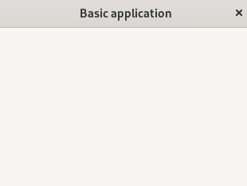

(update:2026/4/30)
Gtk::Window は、gtkmm4 の中で「アプリケーションの最上位コンテナ（トップレベルウィンドウ）」であり、ユーザーインターフェースの土台・ライフサイクル・イベント管理の中心となります。
Gtk::Window は他のウィジェットを入れるための「最上位の入れ物」です。親を持たず、OS のウィンドウマネージャーに直接管理されます。次に示す役割はGtk::Windowが担います。
GTK4 では Window に 1つの子ウィジェットしか配置できません。複数の子ウィジェットを配置したい場合は Gtk::Box や Gtk::Grid を子ウィジェットとして配置し、その中にウィジットを追加します。
gtkmm4 では Window は Gtk::Application によって管理されます。
Gtk::Window は CSS のルートノードでもあります。GTK4 の CSS は Window から下に伝播するため、アプリ全体のテーマを Window でコントロールできます。
Gtk::DrawingArea を使う場合、Gtk::Window が描画の基準となる座標系の起点になります。
Gtk::Window にタイトルをセットし、ウインドウのサイズを指定します。そして、Gtk::Window を表示します。
#include <gtkmm.h>
class MyWindow : public Gtk::Window
{
public:
MyWindow();
virtual ~MyWindow() = default;
};
MyWindow::MyWindow()
{
set_title( "Basic application" );
set_default_size( 320, 240 );
}
int main(int argc, char* argv[])
{
auto app = Gtk::Application::create( "gtkmm4.examples" );
return app->make_window_and_run<MyWindow>(argc, argv);
}

| Top | Next |
| Copyright (c) Henrry Yamm Project All Rights Reserved. |
|---|